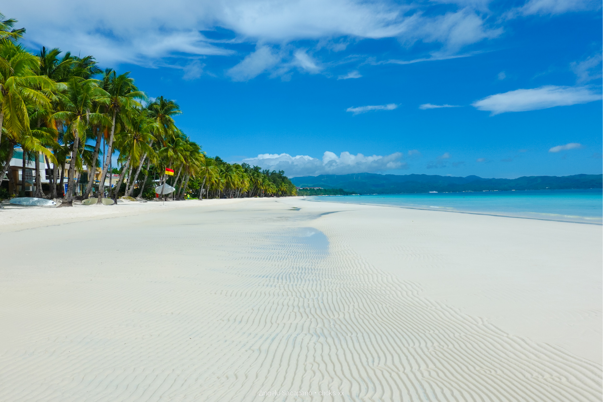

Boracay Beach
By: [ztsuki]Boracay sometimes shortened by non-natives as Bora is a resort island in the Western Visayas region of the Philippines, located 0.8 kilometers (0.50 mi) off the northwest coast of Panay Island. It has a total land area of 10.32 square kilometers (3.98 sq mi), under the jurisdiction of three barangays in Malay, Aklan, and had a population of 37,802 in 2020. Boracay was originally inhabited by the Panay Bukidnon and Ati people, but commercial development has led to their severe marginalization since the 1970s. Boracay island from space. Apart from its white sand beaches, Boracay is also famous for being one of the world's top destinations for relaxation. As of 2013, it was emerging among the top destinations for tranquility and nightlife. International travel magazine Travel + Leisure ranked Boracay as the Best Island in the World in 2012. In 2014, the resort island was at the top of the "Best Islands in the World" list published by the international magazine Condé Nast Traveler. In 2016, Boracay headed the magazine's list of "Top 10 destinations to watch". In April 2018, the Philippine government,under President Rodrigo Duterte, decreed a six-month closure of the island for tourists to undertake major renovation works, especially of the sewage system, which had become obsolete and insufficient. The island was administered by the Boracay Inter-agency Task Force during the closure. It reopened in October 2018, with a new set of rules meant to address a variety of issues. The Boracay Ati-atihan in January 2024 witnessed a record-breaking number of tourists, with 36,741 people participating in the event. This festival, which celebrates the cultural heritage of the Ati indigenous people, has been a major draw for tourists and is set to be elevated as a major tourism attraction for the island starting next year.